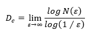

Table of contents |
|---|
| Abstract |
| Introduction |
| Analysis and discussion |
| References |
Nature has always been perceived as, messy, unpredictable and irregular, however mathematics is seen as calculated and precise with straight lines and perfect equations. This leads to two main representations of nature, smooth and rough. Smooth nature is when a shape, like a mountain, is simplified to a cone, whereas rough nature is exactly as you see it with bumps and ridges. Euclidean geometry has always shaped the understanding of space and structure, as he focused more on smooth nature, which works for human made objects such as building, bridges and roads, where surfaces are smooth and angles are precise. In contrast to rough nature when the rules of Euclidean geometry begin to faulter, as clouds are not perfect spheres, mountains are not singular cones and coastlines will not follow smooth curves, but the tide. When trying to understand the ever-changing natural world, mathematicians needed a different way of calculating, and that is when fractal geometry was created.
What are Fractals? Fractals are patterns or shapes that repeat the same structure indefinitely (Benoit.B.Mandelbrot, 1989).When “The Fractal geometry of nature” was published (Peitgen, 2010), it showed geometric shapes and displayed self-similarity, so a small part of the fractal resembles the whole structure. Providing strong foundations for describing the complexities behind nature. Mandelbrot can then describe a mathematical model for many of the complex pattern found in the natural world (Benoit.B.Mandelbrot, 1989). This helps to understand how a fern’s leaf mirrors the pattern of the entire plant, the repeating nature is approximate, each level of zoom reveals similar complexity (Prusinkiewicz & Lindenmayer, 1990).
Fractals may be aesthetic, however they are much more mathematically, unlike the clean and orderly lines in Euclidean geometry, fractals usually possess dimensions that are non-integers or don’t fit into a fraction. While a line is one-dimensional and a plane is two-dimensional, a fractal may have a dimension of 1.25 or 1.8, meaning it lies somewhere between a line and a surface. Fractal dimension is used to measure how ‘rough’ or filled a shape is. One way to measure the fractal dimension is thought the box counting method:

The equation N(ε) represents the number of boxes of size (ε) needed to cover the shape (El-Shaarawi & Piegorsch, 2002). The number of boxes increase faster as they get smaller, the more complex the shape will get, the higher its fractal dimension will be (Sander, 1987). Classical geometry worked under the assumption that nature could be simplified into ideal forms. But by the twentieth century, scientists began realizing that nature’s shapes defied this simplicity as the mathematician Benoît Mandelbrot whose often called the father of fractal geometry, formalized this insight (Mandelbrot, 1984). Mandelbrot showed that many natural phenomena from coastlines to mountain ranges could be described using recursive, repeating mathematical rules. Unlike Euclid’s perfect lines and planes, fractals capture the roughness and irregularity of nature (Hartshorne, 2000). Mandelbrot’s work demonstrated that chaos is not purely random but often governed by hidden patterns of self-similarity. Fractals appear across nearly every scale in nature, from the microscopic to the cosmic, including on land and in the sea. When we measure a coastline’s length, the result depends on the scale of measurement a paradox known as the coastline problem. Using shorter measuring sticks reveals more small-scale details, making the coastline appear longer as it will be measured more accurately. This scale-dependence reveals its fractal nature, the shape repeats at multiple levels of magnification (Kappraff, 1986). Similarly, mountain ranges exhibit fractal roughness, with smaller ridges resembling larger peaks. Plants often grow according to fractal principles, like the branching of a tree, following self-similar rules, each branch divides into smaller branches, which divides again, therefor repeating the same geometric logic. The same occurs in ferns, Romanesco broccoli, and even the veins of leaves. This pattern is not just visually appealing; it allows plants to maximize sunlight exposure and nutrient transport efficiently (Corbit & Garbary, 1995). River networks exhibit branching fractals. A large river will split into smaller tributaries, and those divide again, forming a self-similar hierarchy that optimizes water flow (Dong, Yue-Yang; Wang, Peng; Hua, Zu-lin; Liu, Xiao-dong, 2024). Likewise, a lightning bolt branches recursively through the air as it seeks the path of least resistance, mirroring the branching seen in trees and blood vessels (Kawasaki & Matsuura, 2000). The Earth’s crust will also display fractal geometry. Fault lines and plate boundaries are not smooth curves but jagged and branching structures. Geological studies show that the distribution of earthquake magnitudes follows a fractal law, many small quakes and few large ones, arranged in a scale-invariant pattern (Sornett & Pisarenko, 2003). The fractal dimension of fault networks will typically lie between 1.3 and 1.7, revealing a consistent structure across scales ranging from microscopic rock fractures to continental rifts (D, 2002). Fractal geometry extends deep into living organisms. The human circulatory system, lungs, and neuronal networks all exhibit fractal branching that balances efficiency with space-filling capability (Ionescu, et al., 2009). In the human lung’s, fractal surface area allows for enormous gas exchange within a compact volume. Similarly, the brain’s neural connections follow fractal paths that optimize information transfer. Conclusion Fractals provide more than visual or conceptual beauty they have practical power in science and technology. By applying fractal mathematics, researchers can model natural phenomena that were once too irregular for traditional equations. Fractals are used in climate modelling, geophysics, medical imaging, and computer graphics to replicate natural textures like clouds and landscapes. More philosophically, fractals reveal that nature’s complexity is not random but organized. Chaos theory and fractal geometry together show that the apparent disorder of the world follows deep mathematical rules. The same equations that generate the delicate structure of a snowflake can also describe the growth of a galaxy. This contrast makes fractal geometry a revolutionary extension of classical mathematics. Where Euclid drew with ruler and compass, fractal geometry draws with recursion and chaos, tools capable of capturing the infinite variety of the natural world. Table 1: Different fractal dimensions in nature| Examples | Approximate fractal dimension |
|---|---|
| Mountains | 2.2 |
| Coastlines | 1.02 |
| Snowflake | 1.26 |
| Maple leaf | 1.8 |
| Lighting | 1.34 |
My References link text